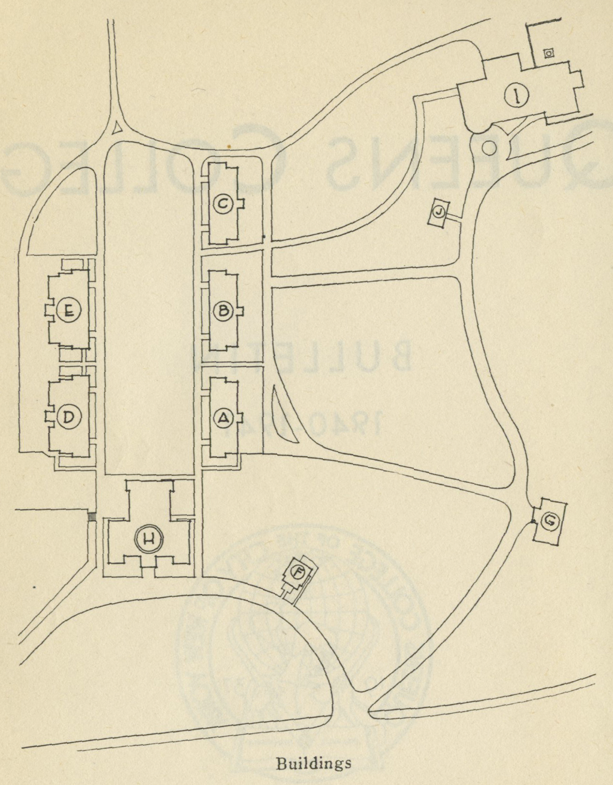

| Campus Map 1940 | ||
|---|---|---|
 |
||
| A. Walt Whitman Hall B. Classrooms and offices C. Classrooms and offices D. Geology, Physics, Science Survey E. Biolody, Chemistry F. Stephen Foster Hall --The College Store G. Speech | H. Jefferson Hall --Bursar --Curator --Dean --President --Register --Superintendent of buildings and grounds --library --Auditorium --Gymnasium I. The collge center --Student Lounge --Student Cafeteria --Faculty Dining Room | |